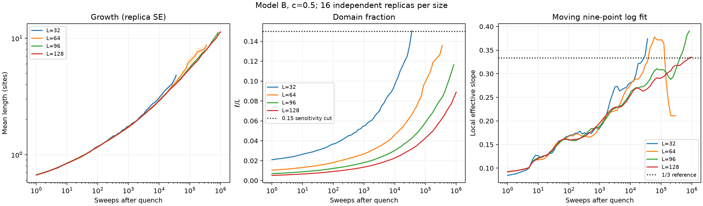

When does an image stop looking composition-conserving?
Draft for student review. No academic endorsement or industrial validation claimed.
I am using a conserved phase-ordering model to test whether an image-processing pipeline can change both the apparent composition and the growth rate measured from exactly the same microstructures.
The model
Both engines use a two-dimensional Ising lattice. Model A uses Metropolis spin flips; Model B uses Kawasaki exchanges, which conserve composition exactly. Model B also allows different horizontal and vertical couplings.
The problem I'm investigating
The conserved model first gave a measured growth exponent below the late-stage 1/3 prediction. Longer runs showed that the fitted value moves with time window and lattice size. I then noticed a more specific problem: a binary image made from an exactly conserved simulation did not preserve the apparent phase fraction. I therefore separated low-resolution pixel integration from the later segmentation step.
What I can check
Tests cover energy bookkeeping, conserved composition, correlation analysis and the regular-solution mapping. The completed extension retains 128 new seeded trajectories, raw snapshots, all declared fit windows and missing measurements.
Current evidence
The extension ran 16 new trajectories for each of two compositions and four sizes to one million sweeps. On the 32 width-128 trajectories, a 4×4 arithmetic-mean image preserved the field mean exactly. Thresholding that image did not. Across all checkpoints, the apparent +1 fractions became 0.5295 instead of 0.5000 and 0.0958 instead of 0.1500. Over the fixed 1,000–20,000-sweep window, segmentation after integration shifted the fitted exponent by −0.054 [−0.056, −0.052] and −0.044 [−0.047, −0.041]. These are paired whole-trajectory bootstrap intervals, not a universal microscope correction.
I also remeasured all 9,600 extension states using four domain-length definitions. Their fitted exponents differed substantially, but at one million sweeps every measure placed the 15:85, L=32/L=128 length ratio below 0.68, with every bootstrap interval below one. This makes the small-box departure more robust than the numerical exponent used to describe it.

One question for a reviewer
Is the combination of a conservation-aware imaging decomposition and an observable-robust finite-size check useful enough to develop into a paper, and which real coarsening dataset would provide a fair outside test?
Scope: a controlled model study, not an alloy-design tool. It omits 3D structure, elastic strain, defects and composition-dependent mobility. Monte Carlo sweeps have not been converted into physical ageing time.
The materials thermodynamics diagram compares the regular-solution approximation with exact infinite-2D Ising coexistence. It helps distinguish phase coexistence from local instability; neither curve is a measured alloy diagram or a proof of the finite-run kinetic mechanism.

A published binary Fe–Cr ageing study links microstructure measurements to hardness and reports different feature sizes from different microscopy methods. It motivates checking our length definition; its hardness values are not predictions from this simulation.
In a separate public Al–Ge image test, I fixed 11 slices at each ageing stage before measuring them. Seven early central slices had no Ge in the chosen square, so the length was undefined. The published paper separates Ge lamellae from later precipitates; my first all-Ge length does not. This is a question for a microscopist, not experimental validation of my simulation.